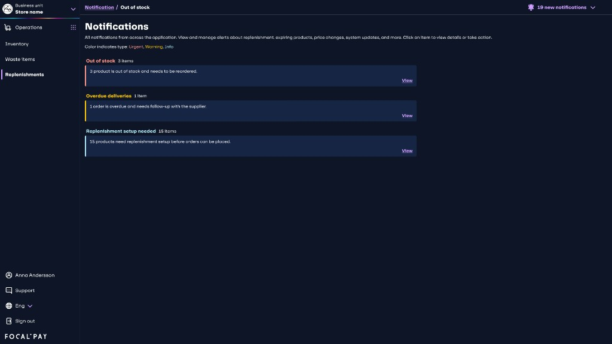
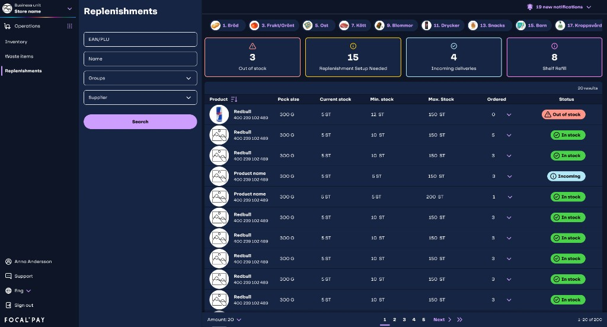
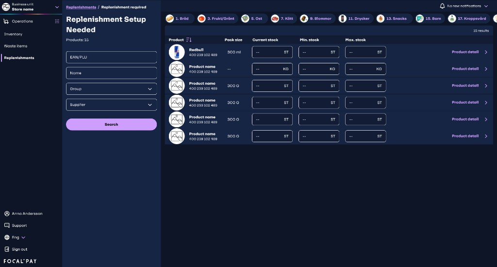
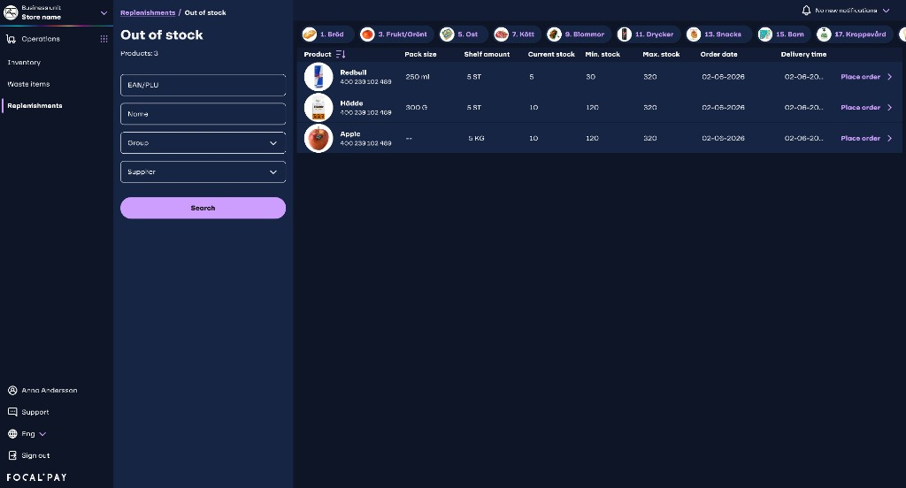
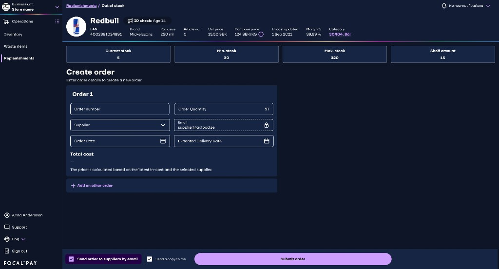
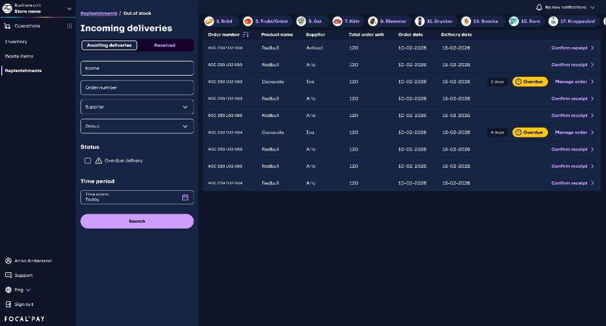
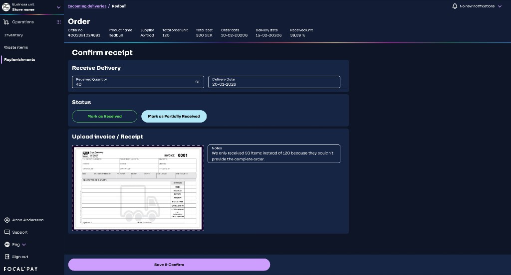
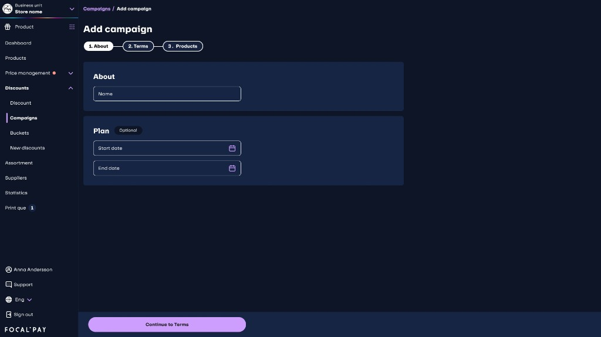
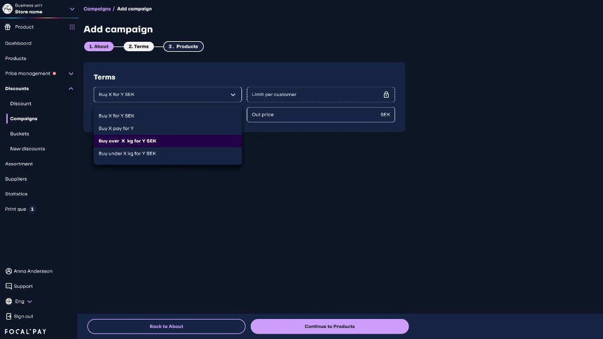
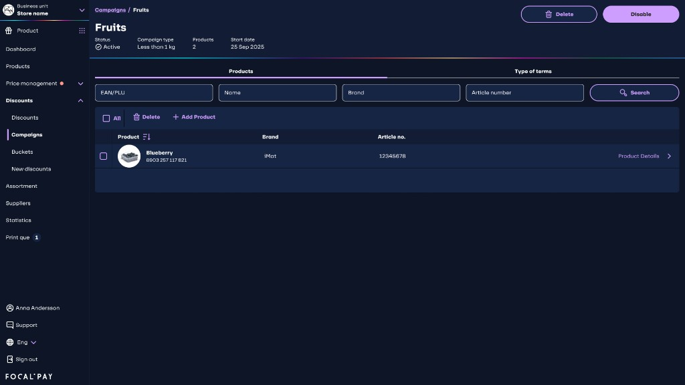

The Focalpay platform merges checkout, payments and back-office into one system. The Back-office is its control centre: the place where retailers, from single stores to chains, manage the products, stock, prices, campaigns and payment methods that every checkout uses. Customers ranged from the footwear brand Icebug to supermarket chains like Matrebellerna and Matvärlden.
Focalpay built it to support stores, empower staff and protect margins, by helping teams act early instead of reacting. That made two areas critical: knowing when stock runs low, and setting up campaigns correctly. In both, the system still left the remembering, the checking and the maths to store managers.
My role
Joined midway as one of two designers, and owned Replenishment, Campaigns and the design system.
When my colleague moved on, I became the only designer on the team.
Interviewed 6 managers from 6 customer businesses, and worked closely with the PM and engineering.
Problem 1 of 2
Replenishment
From empty shelves to early warnings
Introduction
The challenge
Store managers had no warning before a product ran out. They found out when the shelf was already empty, and then ordering took seven manual steps.
The one question
So every decision had to answer one question:
does the manager know about low stock before the shelf is empty?
Discover
What we found
In interviews, managers did real replenishment tasks while thinking aloud, and I followed up with questions. Two findings shaped the work:
No warning before a product ran out. To prevent it, managers checked their best-selling products one by one, and still found out when the shelf was empty. — Interviews
Ordering was done by hand, every time: finding the supplier, working out quantity and cost, and writing the order email. — Interviews
Connect
From findings to directions
No warning → alerts that sort themselves by urgency
Ordering by hand → orders with supplier, stock levels and cost filled in
How I structured Replenishment
One overview, four clear paths, and notifications that point to each of them.
Notifications
Grouped by urgency
Replenishments overview
Four summary cards
Out of stock
Place order → Create order, emailed to the supplier
Setup needed
Set current, min and max stock inline
Incoming deliveries
Awaiting, with overdue warnings
Confirm receipt: full or partial, invoice and notes
Shelf refill
Products to restock on the shelf
Design
Three decisions
Before, ordering stock took seven steps, and the first one was a surprise.
Before · 7 steps
1Notice a product is empty on the shelfNo warning
2Check the stock for that product
3Review other best-selling products one by one
4Find the supplier and their contact details
5Work out the quantity and cost
6Write and send the order email
7Keep track of the delivery manually
After · 2 steps
1
Open the alert
Out-of-stock products, grouped by urgency.
2
Place the order
Supplier, stock levels and cost already filled in.
Deliveries are then tracked in the app, and overdue orders flag themselves.
Decision 1 · Alerts that sort themselves by urgency
All notifications live on one page, grouped and colour-coded: red for products out of stock, yellow for overdue deliveries, blue for products that still need stock rules. Each group says in one plain sentence what needs doing. Managers get less detail at first glance, but far less noise, and the details are one click away.

Notifications grouped by urgency, each with one clear next step.
Decision 2 · One overview, with stock rules in one place
The Replenishments page opens with four summary cards: Out of stock, Setup needed, Incoming deliveries and Shelf refill, so managers start from what needs them. Alerts only work if every product has a minimum and maximum stock, so products without them are collected in one list, where managers set them directly, in pieces or kilos.

Summary cards on top, every product's stock status below.

Setting stock rules for 15 products from one screen.
Decision 3 · Ordering and deliveries without the paperwork
From the Out of stock list, one tap opens the order, with stock levels at the top, the supplier's email filled in and the total cost calculated from the latest in-cost. Orders are sent by email straight from the app. Deliveries show how many days they're overdue, and managers confirm each one as received or partially received, with the invoice and a note.

Out of stock: every product one tap away from an order.

Stock levels up front, supplier and cost filled in.

Overdue deliveries show how many days late they are.

Confirming a partial delivery, with the invoice and a note.
Results
What changed
7 → 2
steps to order stock
35%
less operational friction, assessed in a workshop with 5 store managers
"Moving stock level to the top sounds like a small thing. For us, it saves 20 minutes a day."
— Assistant Manager, Matvärlden
Problem 2 of 2
Campaigns
From maths to templates
Introduction
The challenge
Weighted campaigns, for products sold by weight like fruit or deli items, were slow to set up and easy to get wrong.
The one question
So every decision had to answer one question:
can a manager set up a weighted campaign without doing the maths?
Discover
What we found
In the same interviews, managers set up campaigns while thinking aloud. Three findings shaped the work:
Every weighted campaign meant doing the maths. Managers calculated each discount by hand and typed it in. — Interviews
Prices and campaigns drifted apart. "Every time base prices change, I'm double-checking campaigns by hand." 4 of 6 managers reported inconsistencies between catalogue data and campaign rules. — Interviews
The system spoke the database's language. A manager wasn't sure what "Base unit price" meant, and others with similar businesses agreed: their everyday words were clearer. — Interviews
Connect
From findings to directions
Maths by hand → ready-made templates for the most common campaigns
Double-checking by hand → the system knows each product's base price and calculates the rest
Database words → the store's own words
Turning point
The interviews said it was painful. The data showed the way out.
What managers told me
Campaigns take too long
What the data showed
94% follow just two patterns
Managers told me campaigns were slow, but not what most campaigns had in common. So I asked our supermarket customers for their last three months of campaign data and analysed it myself.
94% of weighted campaigns followed one of two patterns.
The aha moment
Managers didn't need a more flexible form. They needed the two campaigns they ran all the time, ready to use.
Design
Two decisions
Decision 1 · A three-step builder with two weight templates
Instead of a form where every campaign meant doing the maths, I designed a three-step builder: About → Terms → Products. The system already knows each product's base price, so in Terms the manager picks one of two weight templates, sets the weight and the campaign price, and the system calculates the rest. For example: over 2 kg for 30 SEK/kg, instead of the usual 45 SEK/kg. Templates are less flexible, but covering 94% of weighted campaigns in a few clicks was worth more than a form that could do everything, slowly.

Step 1: name the campaign; dates are optional.

Step 2: two weight templates, next to the regular campaign types.
Template
Terms
Use case
Template A
Buy over X kg for Y SEK
Near-expiry items · Bulk purchase
Template B
Buy under X kg for Y SEK
Premium deli · Small-portion buyers
Decision 2 · Using the store's words
So the builder uses the words stores already use, instead of field names from the database. Managers don't have to translate before they can act.

A live weight campaign, in plain words.
Results
What changed
I gave 5 store managers the same campaign tasks in the old and new versions, and measured time and errors.
25%
faster campaign creation (4m 20s → 3m 14s)
78%
fewer errors (3.6 → 0.8 per session)
"The campaign builder finally speaks our language."
— Store Manager, Icebug
Design system
One design system for both
I built a design system with a light and a dark theme. Both share the same components, spacing and interactions; only the colours change, so store teams can choose what works in their lighting.
Use the words your users use. One unclear field name can stop a manager. Plain store words removed the need to translate.
Alerts beat checklists. When the system warns early, managers act before the shelf is empty.
What I'd do differently: I'd ask for the campaign data at the start, alongside the interviews. The data showed the way out faster than another round of conversations could.